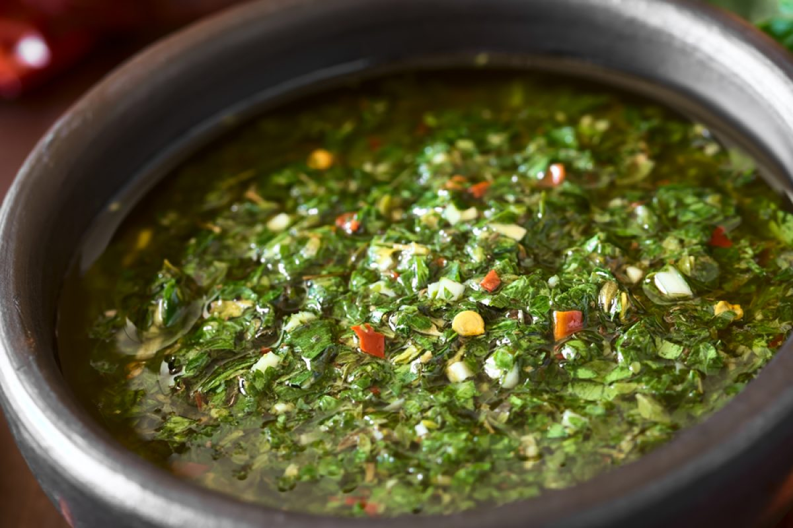

Chimichurri

Description
Chimichurri is an uncooked sauce used both as an
ingredient in cooking and as a table condiment for
grilled meat.
Ingredients
- 1/4 cup hot water
- 2 tablespoons dried oregano
- 1 teaspoon salt
- 1 cup shopped fresh parsley
Instructions
- Combine water, oregano and salt in a small bowl
and set aside until oregano has softened, about 15 minutes
- Combine parsley, cilantro, garlic and jalapeno in the bowl;
pulse until chopped. Add water